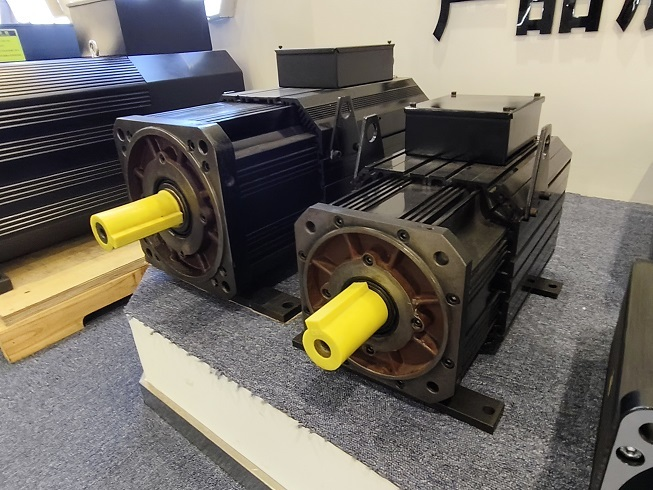

Industrial News

Comparing AC Servo Motor Types for Your Automation Needs
Choosing the right AC servo motor is crucial for the success of any automation project. The right motor can significantly enhance performance and efficiency. Several key factors influence this selection:
- Inertia ratio, ideally 30:1 or lower, ensures better motor response.
- Matching speed and torque requirements to the motor's characteristics is essential.
- Environmental conditions, including IP ratings, affect motor durability.
- Cost considerations must balance performance against budget constraints.
Understanding these factors will help you make informed decisions that lead to successful automation outcomes.
Key Takeaways
- Choose the right AC servo motor by matching torque, speed, and load requirements carefully.
- Consider environmental factors like moisture, dust, and temperature to protect motor performance.
- Understand the differences between synchronous and asynchronous motors to pick the best fit for your needs.
- Brushless motors need less maintenance and last longer than brushed motors, saving time and costs.
- Use closed-loop control systems for better precision and faster response in automation tasks.
What are AC Servo Motors?
AC servo motors are fascinating devices that play a crucial role in automation. I define an AC servo motor as an electric motor designed for precise control over motion, speed, and position. These motors operate within a closed-loop system, which means they continuously adjust their performance based on feedback signals. This feedback mechanism allows them to maintain high accuracy and responsiveness, making them ideal for applications like robotics, CNC machines, and other automation systems where precision is critical.
The construction of an AC servo motor includes essential components such as feedback systems, stators, and rotors. These parts work together to ensure reliable operation. Typically, I find that two- or three-phase AC servo motors are preferred due to their effective performance and ability to maintain precise control over torque, speed, and position.
One of the standout features of AC servo motors is their use of feedback devices, such as encoders or resolvers. These devices monitor the motor's performance in real time, allowing it to adjust accordingly. This capability ensures accurate and consistent results, even in demanding environments. For instance, in manufacturing, where precision is paramount, the AC servo motor shines by delivering the exact movements required for intricate tasks.

Types of AC Servo Motors
When it comes to AC servo motors, I find that understanding the different types is essential for making the right choice for your automation needs. The two primary categories I often encounter are synchronous and asynchronous AC servo motors. Each type has its unique characteristics and applications.
Synchronous AC Servo Motors
Synchronous AC servo motors are my go-to choice for applications requiring high precision and efficiency. These motors operate with the rotor and stator spinning in sync, which allows for precise speed and torque control. Here are some key features that make synchronous motors stand out:
| Feature / Advantage | Description |
|---|---|
| Synchronous Operation | The rotor and stator spin in sync, enabling precise speed and torque control. |
| Use of Permanent Magnets | Provides rated torque at precise synchronous speed, enhancing accuracy and efficiency. |
| High Efficiency | Unique speed-to-torque capability minimizes heat, wear, and energy loss. |
| Longevity | Fewer moving parts reduce wear and failure risk, suitable for long-term, continuous operation. |
| Quiet Operation | Simple design and fewer parts result in low noise, beneficial in work and public environments. |
I appreciate that synchronous motors maintain constant speed regardless of load, making them ideal for high-precision applications like robotics and CNC machinery. Their efficiency is another significant advantage; they generally outperform asynchronous motors, especially at higher power levels. This efficiency stems from their ability to avoid slip, which is a common issue in asynchronous motors.
Asynchronous AC Servo Motors
On the other hand, asynchronous AC servo motors, also known as induction motors, are robust and durable. They are often my choice for heavy-duty industrial applications. Here’s what I’ve learned about their operational principles:
- Torque is generated by electromagnetic induction, where current flows in the rotor due to the stator's magnetic field.
- Unlike synchronous motors, asynchronous motors do not have permanent magnets on the rotor.
- They utilize vector control to independently regulate torque-producing current and magnetic flux current, enabling precise control of torque and speed.
Asynchronous motors are typically more cost-effective and simpler in design. However, they do experience slip, which can lead to speed variations and reduced precision. This makes them less suitable for applications requiring exact positioning.
| Aspect | Synchronous AC Servo Motors | Asynchronous AC Servo Motors |
|---|---|---|
| Efficiency | Generally more efficient at higher power and steady speeds; no slip losses | Efficient especially at low loads and speeds; simpler structure |
| Precision | Maintains constant speed regardless of load; high precision suitable for robotics and CNC | Less precise due to slip and rotor lag; moderate precision |
| Response Speed | Faster response times, suitable for high-speed, high-precision applications | Slower response due to rotor lag and slip |
| Load Adaptability | Requires precise load matching; less tolerant to load variations | Robust load adaptability; handles fluctuating loads well |
Brushless vs. Brushed AC Servo Motors
When I consider the differences between brushless and brushed AC servo motors, the maintenance requirements stand out. Brushed motors require physical contact between brushes and the commutator, leading to friction and wear. This friction necessitates regular maintenance, including brush replacement. In contrast, brushless motors eliminate these issues, offering longer service life and less maintenance.
- Brushless motors require significantly less maintenance because they do not have brushes.
- Brushed motors need regular maintenance to replace worn brushes and clean the commutator.
- Brushless motors have more complex electronic controls that may require technical expertise for setup and troubleshooting.
Overall, I find that brushless AC servo motors offer reduced maintenance needs and longer service life compared to brushed AC servo motors. This makes them a more reliable choice for continuous production environments where downtime is costly.
Applications of AC Servo Motors
AC servo motors play a vital role in various automation applications. I have seen firsthand how they enhance efficiency and precision across different industries. Here are some key areas where AC servo motors excel:
Industrial Automation
In industrial automation, AC servo motors are indispensable. They provide precise control over position, speed, and torque, which is crucial for tasks like packaging, labeling, and cutting. For instance, I often observe how companies like ABB design AC servo motors specifically for these applications. Their motors are built to withstand harsh environments while ensuring durability and reliability.
| Industrial Automation Processes | Role of AC Servo Motors | Examples of Motor Models |
|---|---|---|
| Robotic arms | Precise movement and control | Siemens 1FK7, Maxon EC-i 40 |
| Pick-and-place machines | High response rates and accuracy | Yaskawa SGM7J Series, Oriental Motor AZ Series |
| Packaging lines | Durability and precision | ABB Baldor-Reliance RPM AC Motors |
Robotics
When it comes to robotics, I find that AC servo motors truly shine. Their ability to deliver high torque at low speeds allows for precise and accurate control. This capability is essential for tasks such as pick-and-place operations and assembly. The advanced feedback systems in these motors provide real-time data on position and speed, enabling quick adjustments. This responsiveness is critical for maintaining high productivity and precision in robotic applications.
I appreciate how the brushless design of AC servo motors reduces maintenance needs, allowing robots to operate longer without interruptions. This durability translates to lower lifecycle costs and increased efficiency in production environments.
CNC Machinery
In CNC machinery, the advantages of AC servo motors become even more apparent. They offer higher speeds and better acceleration compared to other motor types, such as stepper motors. This performance is crucial for producing intricate components with tight tolerances. The closed-loop feedback systems in AC servo motors ensure that they maintain precise positioning, preventing errors that could lead to costly defects.
I have seen how these motors provide consistent torque across various speeds, making them ideal for dynamic machining tasks. Their ability to deliver peak torque when needed allows CNC machines to overcome load variations effectively.
Factors to Consider When Choosing an AC Servo Motor
When selecting an AC servo motor, I always emphasize the importance of understanding several critical factors. These factors can significantly impact the performance and efficiency of your automation system. Here’s what I consider essential:
Torque Requirements
Torque requirements are fundamental to choosing the right AC servo motor. I often calculate both continuous and peak torque needs based on load forces, acceleration, and deceleration. Here are some key points I keep in mind:
- Load Inertia: Higher load inertia demands greater motor torque. This means I need a more powerful motor to handle dynamic conditions effectively.
- Range of Speed: The motor speed must align with application needs. Torque requirements can vary significantly with speed.
- Peak Torque: I assess the peak torque needed at any point. This influences motor sizing, ensuring it can handle the demands without overheating.
- Control Mode: The choice between open-loop and closed-loop control often hinges on torque requirements. Closed-loop systems provide better precision and responsiveness.
- Reliability and Lifespan: I consider how torque demands affect motor stress. A well-sized motor will enhance reliability and extend its lifespan.
- Cost: Balancing torque needs with cost is crucial. I aim to find an optimal motor that meets performance requirements without overspending.
- Environmental Conditions: The operating environment can impact torque performance. I always factor in temperature, humidity, and other conditions that may affect motor choice.
To illustrate these factors, I often refer to the torque-speed curve. This curve helps ensure the motor can deliver the required torque continuously or intermittently without overheating. In my experience, servo motors excel in applications requiring high precision and dynamic torque control due to their high torque-to-inertia ratio and closed-loop feedback systems.
Speed Specifications
Speed specifications are another vital aspect of AC servo motors. I typically express these specifications in rotations per minute (RPM), which indicates how fast the motor shaft rotates. Here are some considerations I find important:
- No-Load Speed: Manufacturers usually provide the no-load speed, defined as the speed when the output torque is zero. This speed is crucial for understanding the motor's capabilities.
- Frequency and Magnetic Poles: The speed of an AC servo motor depends on the frequency of the applied voltage and the number of magnetic poles in the motor. I always check these specifications to ensure they meet my application needs.
- Safety Margins: I recommend that the motor's speed and torque capabilities exceed the application's load requirements by about 20-30%. This margin ensures reliable operation without excessive costs.
Understanding these speed specifications helps me select a motor that performs optimally under varying load conditions.
Control Methods
The control method I choose for an AC servo motor can greatly influence its performance. I often evaluate whether an open-loop or closed-loop control system is more suitable for my application. Here’s what I consider:
- Open-Loop Control: This method is simpler and less expensive. However, it lacks feedback, which can lead to inaccuracies in applications requiring high precision.
- Closed-Loop Control: I prefer this method for most applications. It uses feedback from encoders or resolvers to adjust motor performance in real-time. This capability ensures high accuracy and responsiveness, making it ideal for tasks like CNC machining and robotics.
In my experience, closed-loop systems provide better control over speed and torque, allowing for more precise movements. This precision is essential in applications where even minor deviations can lead to significant errors.
By carefully considering torque requirements, speed specifications, and control methods, I can select the most suitable AC servo motor for any automation project. This thoughtful approach ensures optimal performance and efficiency, ultimately leading to successful outcomes.
Environmental Conditions
When I consider the environmental conditions surrounding AC servo motors, I realize how crucial they are for ensuring reliability and longevity. I have seen firsthand how factors like moisture, dust, and extreme temperatures can significantly impact motor performance. Here’s what I’ve learned about managing these conditions effectively.
-
Moisture Control: Uncontrolled moisture can lead to serious issues. It can impair both the motor and encoder functions. I always recommend shielding motors from moisture ingress, especially in environments where cooling fluids or washdowns occur. Using protective enclosures can help keep these elements at bay.
-
Temperature Management: High ambient temperatures can cause overheating, leading to thermal damage and accelerated motor failure. I often suggest using motor temperature sensors to detect abnormal heat levels. This proactive approach helps prevent damage before it occurs. Additionally, thermal management features like heat sinks and cooling fans can be invaluable in maintaining optimal operating temperatures.
-
Dust and Debris: Dust accumulation can degrade motor performance over time. I find that keeping the workspace clean and well-ventilated is essential. Regular maintenance checks can help identify and address dust buildup before it becomes a problem.
-
Material Robustness: I appreciate that many AC servo motors are built with robust materials, bearings, and seals designed to withstand harsh conditions. This construction enhances their durability and reliability.
-
Predictive Maintenance: Implementing predictive maintenance strategies using sensors and IoT technology can significantly reduce the risk of failure. These systems allow for early detection of issues like bearing wear or overheating, enabling timely interventions.
By paying attention to these environmental factors, I can ensure that AC servo motors operate efficiently and last longer. A clean, well-ventilated, and temperature-controlled environment is key to maximizing performance and minimizing downtime.
Comparing Performance Metrics of AC Servo Motors
When I evaluate AC servo motors, I focus on several key performance metrics that can significantly impact their effectiveness in automation applications. Understanding these metrics helps me make informed decisions.
Efficiency Ratings
Efficiency ratings are crucial when comparing AC servo motors. I often look for metrics like the torque constant, rated torque, and peak torque. These values indicate how well a motor converts electrical energy into mechanical energy. For instance, a motor with a high torque constant will deliver more torque per ampere of current, which translates to better efficiency.
Here are some important efficiency-related metrics I consider:
- Torque Constant (N*m/A_rms)
- Rated Torque (N*m)
- Peak Torque (N*m)
- Winding Resistance (Ohms)
I find that a motor's efficiency can also be affected by its design and thermal management. A well-designed motor dissipates heat effectively, allowing it to maintain performance without overheating.
Response Time
Response time is another critical metric. I have seen high-performance AC servo motors achieve impressive response times. For example, in a recent application, a motor stepped 1 degree every 3.5 milliseconds. It accelerated from 0 to 11.3 rad/s in just 1.75 milliseconds. This rapid response is essential for tasks requiring precise positioning. Fast response times ensure that the motor can adapt quickly to changes in load or speed, enhancing overall system performance.
Load Capacity
Load capacity varies among AC servo motor models, primarily due to their thermal dissipation capabilities and winding design. I often assess a motor's continuous torque rating, which must be sufficient to handle the expected loads without overheating. For example, if a motor has a continuous torque rating of 10 Nm, I know it needs to be rated at approximately 14.14 Nm to safely hold a 10 Nm load indefinitely. This consideration is vital for applications requiring continuous holding torque with minimal movement.
By comparing these performance metrics, I can select the right AC servo motor for my automation needs, ensuring optimal efficiency, responsiveness, and load handling.
Common Mistakes in AC Servo Motor Selection
Selecting the right AC servo motor can be challenging. I often see three common mistakes that can lead to costly consequences.
Overestimating Requirements
One mistake I frequently encounter is overestimating the requirements for an AC servo motor. Many people assume they need a motor with maximum torque and speed capabilities. However, I find that this approach can lead to unnecessary expenses. Instead, I recommend assessing the actual needs of your application.
- Evaluate Load Conditions: Understand the load inertia and dynamic conditions. This assessment helps in selecting a motor that meets your needs without oversizing.
- Consider Application Specifics: Focus on the specific tasks the motor will perform. Often, a motor with lower specifications can achieve the desired results effectively.
Ignoring Compatibility
Ignoring compatibility issues can create significant headaches. I’ve learned that ensuring the AC servo motor integrates smoothly with existing systems is crucial. Here are some tips I follow:
- Understand existing control system specifications, including communication protocols and feedback mechanisms.
- Consult motor and control system manufacturers for compatibility advice.
- Prefer motors with standardized communication interfaces like Profinet or Modbus.
- Verify that feedback devices, such as encoders, are compatible with the control system.
By taking these steps, I can avoid potential integration problems that could disrupt operations.
Underestimating Costs
Underestimating costs is another common pitfall. I’ve seen how this mistake can lead to increased long-term expenses. Here’s what I consider:
- Maintenance and Repairs: Failing to budget for maintenance can result in unexpected breakdowns. Timely repairs are essential for keeping systems running smoothly.
- Energy Efficiency: I often overlook the energy savings from optimized power usage. Advanced motion control can significantly reduce operational costs.
- Predictive Maintenance: Investing in predictive maintenance tools can prevent costly downtime. These tools help monitor component health and forecast failures.
By recognizing these factors, I can make more informed decisions that lead to better outcomes in my automation projects.
In conclusion, understanding the different types of AC servo motors is essential for optimizing automation projects. I have learned that selecting the right motor can significantly impact performance and efficiency. Here are some key takeaways:
- Accurately calculate inertia ratios to ensure you choose the right motor or motor-gearhead combination.
- Consider environmental conditions that may affect motor performance.
- Evaluate motor efficiency by reviewing torque constants and winding options.
- Match motor size to load inertia for proper acceleration and control.
By following these guidelines, I can make informed decisions that enhance productivity and reliability in my automation systems.